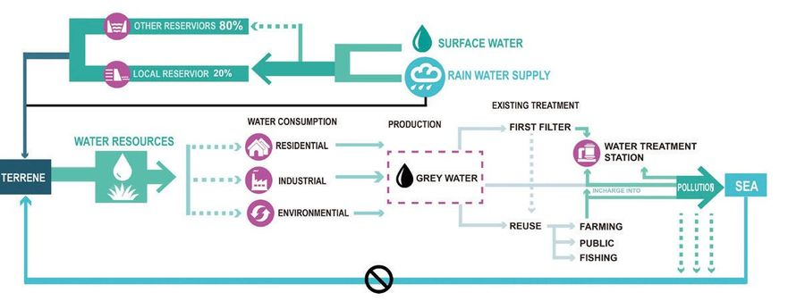
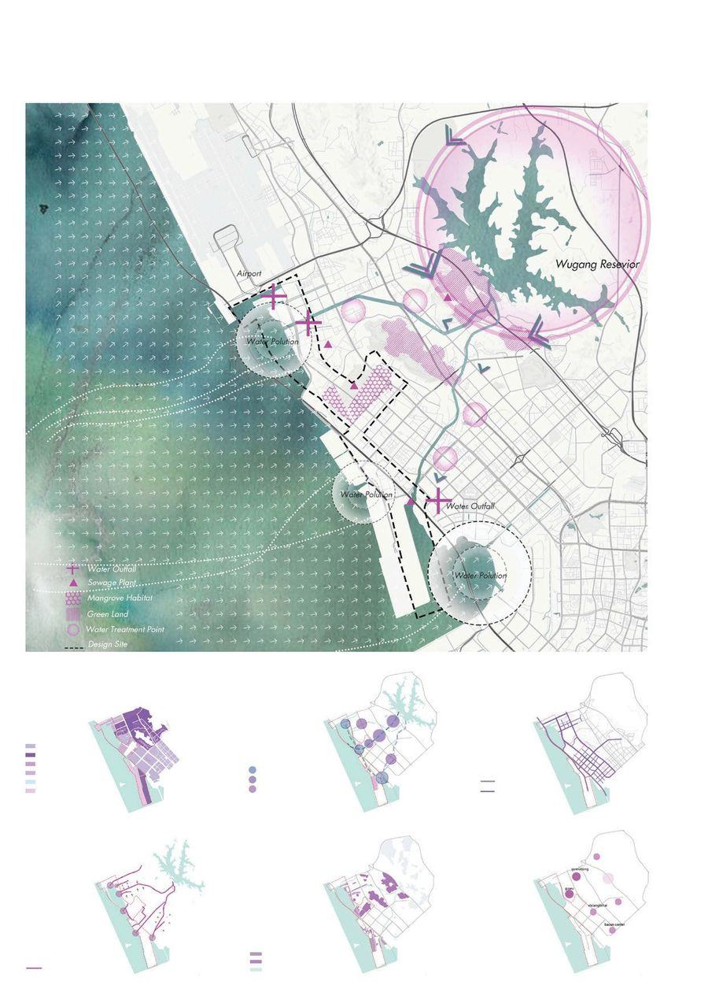
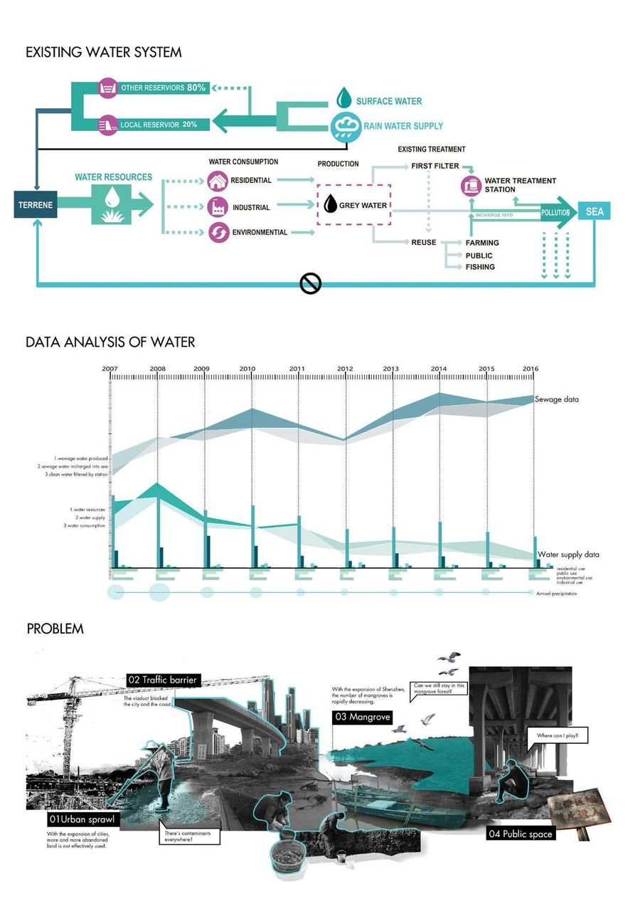
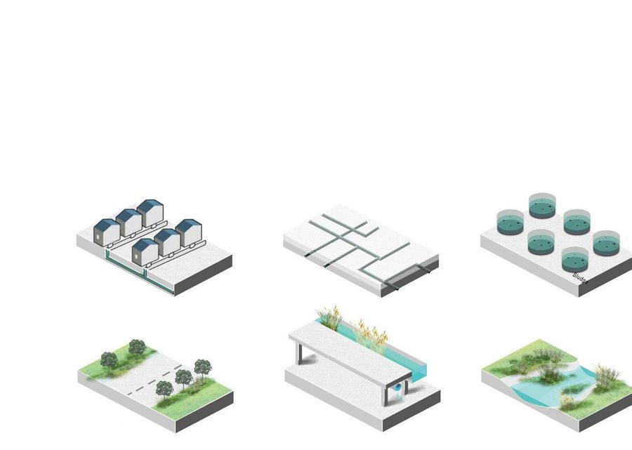
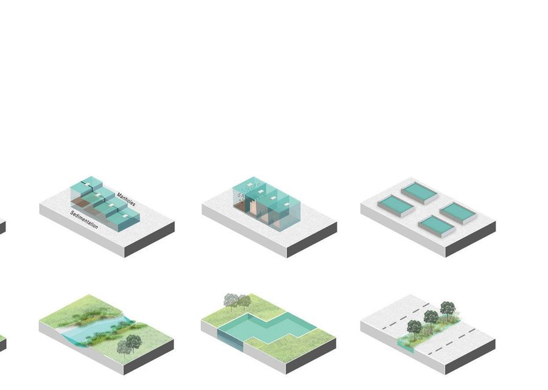
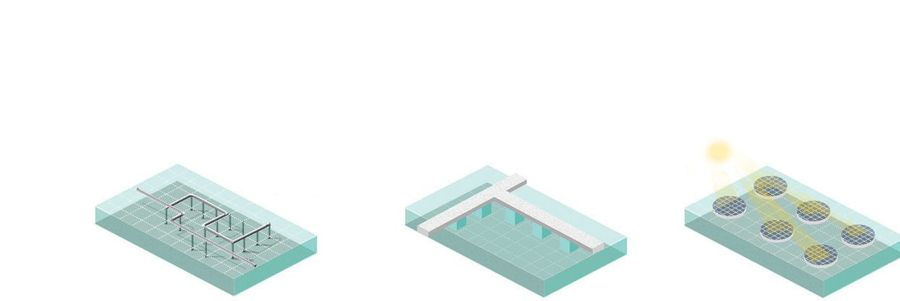
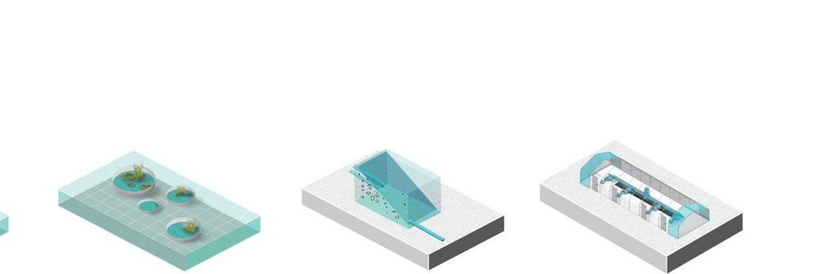

Interaction
- Place
- Shenzhen, China
- Year
- 2017
- Type
- Academic work
- Supervisor
- Wei Xuerao
- Collaborations
- Xie Zhuohan

Rebuilding the water cycle between sea and land, on a forgotten mangrove edge of Shenzhen.
All that exists on land exists in the sea. Since ancient times the cycle between the two has been a condition for symbiosis; as the city develops, we gradually lose that balance. The site lies in Baoshan District, Shenzhen — a margin the city has forgotten, with a large number of urban sewage outfalls and mangroves declining year by year.

Shenzhen is a water-short city, so the design takes the water cycle as its entry point for restoring the relationship between sea and land. Two main streamlines run through the site: sewage purification from the city to the ocean, and seawater desalination from the sea back to the city.


A series of ecological restoration measures becomes a series of places where people meet the process directly. The cycle of natural materials is combined with daily life and recreation — production is the landscape.




 Next projectTidal ParkHook of Holland, NL, 2018
Next projectTidal ParkHook of Holland, NL, 2018